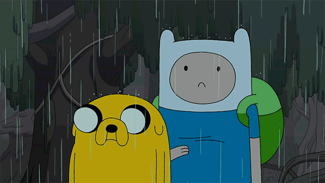
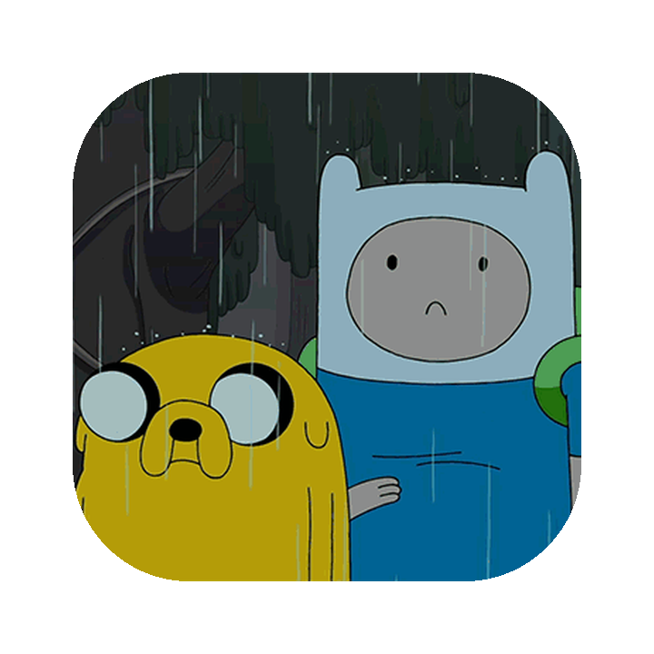

GIF
프레임 디코딩을 지원하지 않는 환경에서도 원본 재생을 유지하며 효과를 적용합니다.
이미지가 화면에 들어오면 큰 픽셀에서 원본으로 전환합니다. GIF·Animated WebP·APNG도 재생을 멈추지 않습니다.
대표 이미지에서 현재 설정을 바로 확인할 수 있습니다.

값을 바꾸고 다시 재생하면 대표 이미지와 아래 예시에 함께 적용됩니다.
큰 픽셀부터 작은 픽셀 순으로 쉼표로 구분합니다.
파일 경로는 배포 환경에 맞게 수정하세요.
pixel-mosaic.css와 pixel-mosaic.js를 불러옵니다.
<img>에 data-pixel-mosaic를 추가합니다.
같은 원본을 GIF, Animated WebP, APNG로 비교합니다.
GIF
프레임 디코딩을 지원하지 않는 환경에서도 원본 재생을 유지하며 효과를 적용합니다.
Animated WebP
자동 판별이 어려운 파일은 data-pm-animated="true"로 지정할 수 있습니다.
APNG
이미지 바이트를 읽을 수 없는 경우에도 애니메이션은 멈추지 않습니다.
투명 영역과 이미지 비율, 둥근 모서리를 유지합니다.
Static PNG
현재 이미지 요소를 그대로 사용하므로 별도의 저해상도 파일이 필요하지 않습니다.

Transparent PNG
체크 패턴 위에서 투명 영역이 유지되는지 확인할 수 있습니다.
기기에서 동작 줄이기를 사용 중이면 모자이크와 노이즈를 생략하고 원본 이미지를 바로 표시합니다.